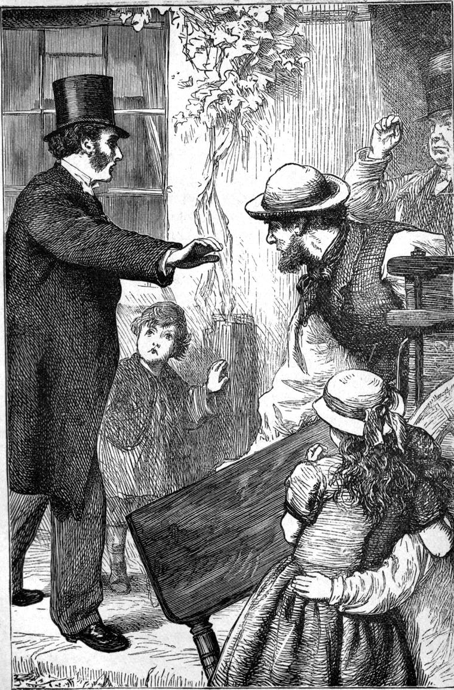

But I cannot express equal satisfaction in regard to everything that Mr Brownrigg took upon his own responsibility, as my reader will see. He, and another farmer, his neighbour, had been so often re-elected churchwardens, that at last they seemed to have gained a prescriptive right to the office, and the form of election fell into disuse; so much so, that after Mr Summer’s death, which took place some year and a half before I became Vicar of Marshmallows, Mr Brownrigg continued to exercise the duty in his own single person, and nothing had as yet been said about the election of a colleague. So little seemed to fall to the duty of the churchwarden that I regarded the neglect as a trifle, and was remiss in setting it right. I had, therefore, to suffer, as was just. Indeed, Mr Brownrigg was not the man to have power in his hands unchecked.
I had so far recovered that I was able to rise about noon and go into my study, though I was very weak, and had not yet been out, when one morning Mrs Pearson came into the room and said,—
“Please, sir, here’s young Thomas Weir in a great way about something, and insisting upon seeing you, if you possibly can.”
I had as yet seen very few of my friends, except the Doctor, and those only for two or three minutes; but although I did not feel very fit for seeing anybody just then, I could not but yield to his desire, confident there must be a good reason for it, and so told Mrs Pearson to show him in.
“Oh, sir, I know you would be vexed if you hadn’t been told,” he exclaimed, “and I am sure you will not be angry with me for troubling you.”
“What is the matter, Tom?” I said. “I assure you I shall not be angry with you.”
“There’s Farmer Brownrigg, at this very moment, taking away Mr Templeton’s table because he won’t pay the church-rate.”
“What church-rate?” I cried, starting up from the sofa. “I never heard of a church-rate.”
Now, before I go farther, it is necessary to explain some things. One day before I was taken ill, I had had a little talk with Mr Brownrigg about some repairs of the church which were necessary, and must be done before another winter. I confess I was rather pleased; for I wanted my people to feel that the church was their property, and that it was their privilege, if they could regard it as a blessing to have the church, to keep it in decent order and repair. So I said, in a by-the-by way, to my churchwarden, “We must call a vestry before long, and have this looked to.” Now my predecessor had left everything of the kind to his churchwardens; and the inhabitants from their side had likewise left the whole affair to the churchwardens. But Mr Brownrigg, who, I must say, had taken more pains than might have been expected of him to make himself acquainted with the legalities of his office, did not fail to call a vestry, to which, as usual, no one had responded; whereupon he imposed a rate according to his own unaided judgment. This, I believe, he did during my illness, with the notion of pleasing me by the discovery that the repairs had been already effected according to my mind. Nor did any one of my congregation throw the least difficulty in the churchwarden’s way.—And now I must refer to another circumstance in the history of my parish.
I think I have already alluded to the fact that there were Dissenters in Marshmallows. There was a little chapel down a lane leading from the main street of the village, in which there was service three times every Sunday. People came to it from many parts of the parish, amongst whom were the families of two or three farmers of substance, while the village and its neighbourhood contributed a portion of the poorest of the inhabitants. A year or two before I came, their minister died, and they had chosen another, a very worthy man, of considerable erudition, but of extreme views, as I heard, upon insignificant points, and moved by a great dislike to national churches and episcopacy. This, I say, is what I had made out about him from what I had heard; and my reader will very probably be inclined to ask, “But why, with principles such as yours, should you have only hearsay to go upon? Why did you not make the honest man’s acquaintance? In such a small place, men should not keep each other at arm’s length.” And any reader who says so, will say right. All I have to suggest for myself is simply a certain shyness, for which I cannot entirely account, but which was partly made up of fear to intrude, or of being supposed to arrogate to myself the right of making advances, partly of a dread lest we should not be able to get on together, and so the attempt should result in something unpleasantly awkward. I daresay, likewise, that the natural SHELLINESS of the English had something to do with it. At all events, I had not made his acquaintance.
Mr Templeton, then, had refused, as a point of conscience, to pay the church-rate when the collector went round to demand it; had been summoned before a magistrate in consequence; had suffered a default; and, proceedings being pushed from the first in all the pride of Mr Brownrigg’s legality, had on this very day been visited by the churchwarden, accompanied by a broker from the neighbouring town of Addicehead, and at the very time when I was hearing of the fact was suffering distraint of his goods. The porcine head of the churchwarden was not on his shoulders by accident, nor without significance.
But I did not wait to understand all this now. It was enough for me that Tom bore witness to the fact that at that moment proceedings were thus driven to extremity. I rang the bell for my boots, and, to the open-mouthed dismay of Mrs Pearson, left the vicarage leaning on Tom’s arm. But such was the commotion in my mind, that I had become quite unconscious of illness or even feebleness. Hurrying on in more terror than I can well express lest I should be too late, I reached Mr Templeton’s house just as a small mahogany table was being hoisted into a spring-cart which stood at the door. Breathless with haste, I was yet able to call out,—
“Put that table down directly.”

At the same moment Mr Brownrigg appeared from within the door. He approached with the self-satisfied look of a man who has done his duty, and is proud of it. I think he had not heard me.
“You see I’m prompt, Mr Walton,” he said. “But, bless my soul, how ill you look!”
Without answering him—for I was more angry with him than I ought to have been—I repeated—
“Put that table down, I tell you.”
They did so.
“Now,” I said, “carry it back into the house.”
“Why, sir,” interposed Mr Brownrigg, “it’s all right.”
“Yes,” I said, “as right as the devil would have it.”
“I assure you, sir, I have done everything according to law.”
“I’m not so sure of that. I believe I had the right to be chairman at the vestry-meeting; but, instead of even letting me know, you took advantage of my illness to hurry on matters to this shameful and wicked excess.”
I did the poor man wrong in this, for I believe he had hurried things really to please me. His face had lengthened considerably by this time, and its rubicund hue declined.
“I did not think you would stand upon ceremony about it, sir. You never seemed to care for business.”
“If you talk about legality, so will I. Certainly YOU don’t stand upon ceremony.”
“I didn’t expect you would turn against your own churchwarden in the execution of his duty, sir,” he said in an offended tone. “It’s bad enough to have a meetin’-house in the place, without one’s own parson siding with t’other parson as won’t pay a lawful church-rate.”
“I would have paid the church-rate for the whole parish ten times over before such a thing should have happened. I feel so disgraced, I am ashamed to look Mr Templeton in the face. Carry that table into the house again, directly.”
“It’s my property, now,” interposed the broker. “I’ve bought it of the churchwarden, and paid for it.”
I turned to Mr Brownrigg.
“How much did he give you for it?” I asked.
“Twenty shillings,” returned he, sulkily, “and it won’t pay expenses.”
“Twenty shillings!” I exclaimed; “for a table that cost three times as much at least!—What do you expect to sell it for?”
“That’s my business,” answered the broker.
I pulled out my purse, and threw a sovereign and a half on the table, saying—
“FIFTY PER CENT. will be, I think, profit enough even on such a transaction.”
“I did not offer you the table,” returned the broker. “I am not bound to sell except I please, and at my own price.”
“Possibly. But I tell you the whole affair is illegal. And if you carry away that table, I shall see what the law will do for me. I assure you I will prosecute you myself. You take up that money, or I will. It will go to pay counsel, I give you my word, if you do not take it to quench strife.”
I stretched out my hand. But the broker was before me. Without another word, he pocketed the money, jumped into his cart with his man, and drove off, leaving the churchwarden and the parson standing at the door of the dissenting minister with his mahogany table on the path between them.
“Now, Mr Brownrigg,” I said, “lend me a hand to carry this table in again.”
He yielded, not graciously,—that could not be expected,—but in silence.
“Oh! sir,” interposed young Tom, who had stood by during the dispute, “let me take it. You’re not able to lift it.”
“Nonsense! Tom. Keep away,” I said. “It is all the reparation I can make.”
And so Mr Brownrigg and I blundered into the little parlour with our burden—not a great one, but I began to find myself failing.
Mr Templeton sat in a Windsor chair in the middle of the room. Evidently the table had been carried away from before him, leaving his position uncovered. The floor was strewed with the books which had lain upon it. He sat reading an old folio, as if nothing had happened. But when we entered he rose.
He was a man of middle size, about forty, with short black hair and overhanging bushy eyebrows. His mouth indicated great firmness, not unmingled with sweetness, and even with humour. He smiled as he rose, but looked embarrassed, glancing first at the table, then at me, and then at Mr Brownrigg, as if begging somebody to tell him what to say. But I did not leave him a moment in this perplexity.
“Mr Templeton,” I said, quitting the table, and holding out my hand, “I beg your pardon for myself and my friend here, my churchwarden”—Mr Brownrigg gave a grunt—“that you should have been annoyed like this. I have—”
Mr Templeton interrupted me.
“I assure you it was a matter of conscience with me,” he said. “On no other ground—”
“I know it, I know it,” I said, interrupting him in my turn. “I beg your pardon; and I have done my best to make amends for it. Offences must come, you know, Mr Templeton; but I trust I have not incurred the woe that follows upon them by means of whom they come, for I knew nothing of it, and indeed was too ill—”
Here my strength left me altogether, and I sat down. The room began to whirl round me, and I remember nothing more till I knew that I was lying on a couch, with Mrs Templeton bathing my forehead, and Mr Templeton trying to get something into my mouth with a spoon.
Ashamed to find myself in such circumstances, I tried to rise; but Mr Templeton, laying his hand on mine, said—
“My dear sir, add to your kindness this day, by letting my wife and me minister to you.”
Now, was not that a courteous speech? He went on—
“Mr Brownrigg has gone for Dr Duncan, and will be back in a few moments. I beg you will not exert yourself.”
I yielded and lay still. Dr Duncan came. His carriage followed, and I was taken home. Before we started, I said to Mr Brownrigg—for I could not rest till I had said it—
“Mr Brownrigg, I spoke in heat when I came up to you, and I am sure I did you wrong. I am certain you had no improper motive in not making me acquainted with your proceedings. You meant no harm to me. But you did very wrong towards Mr Templeton. I will try to show you that when I am well again; but—”
“But you mustn’t talk more now,” said Dr Duncan.
So I shook hands with Mr Brownrigg, and we parted. I fear, from what I know of my churchwarden, that he went home with the conviction that he had done perfectly right; and that the parson had made an apology for interfering with a churchwarden who was doing his best to uphold the dignity of Church and State. But perhaps I may be doing him wrong again.
I went home to a week more of bed, and a lengthened process of recovery, during which many were the kind inquiries made after me by my friends, and amongst them by Mr Templeton.
And here I may as well sketch the result of that strange introduction to the dissenting minister.
After I was tolerably well again, I received a friendly letter from him one day, expostulating with me on the inconsistency of my remaining within the pale of the ESTABLISHED CHURCH. The gist of the letter lay in these words:—
“I confess it perplexes me to understand how to reconcile your Christian and friendly behaviour to one whom most of your brethren would consider as much beneath their notice as inferior to them in social position, with your remaining the minister of a Church in which such enormities as you employed your private influence to counteract in my case, are not only possible, but certainly lawful, and recognized by most of its members as likewise expedient.”
To this I replied:—
“MY DEAR SIR,—I do not like writing letters, especially on subjects of importance. There are a thousand chances of misunderstanding. Whereas, in a personal interview, there is a possibility of controversy being hallowed by communion. Come and dine with me to-morrow, at any hour convenient to you, and make my apologies to Mrs Templeton for not inviting her with you, on the ground that we want to have a long talk with each other without the distracting influence which even her presence would unavoidably occasion.
“I am,” &c. &c.
He accepted my invitation at once. During dinner we talked away, not upon indifferent, but upon the most interesting subjects—connected with the poor, and parish work, and the influence of the higher upon the lower classes of society. At length we sat down on opposite sides of the fire; and as soon as Mrs Pearson had shut the door, I said,—
“You ask me, Mr Templeton, in your very kind letter—” and here I put my hand in my pocket to find it.
“I asked you,” interposed Mr Templeton, “how you could belong to a Church which authorizes things of which you yourself so heartily disapprove.”
“And I answer you,” I returned, “that just to such a Church our Lord belonged.”
“I do not quite understand you.”
“Our Lord belonged to the Jewish Church.”
“But ours is His Church.”
“Yes. But principles remain the same. I speak of Him as belonging to a Church. His conduct would be the same in the same circumstances, whatever Church He belonged to, because He would always do right. I want, if you will allow me, to show you the principle upon which He acted with regard to church-rates.”
“Certainly. I beg your pardon for interrupting you.”
“The Pharisees demanded a tribute, which, it is allowed, was for the support of the temple and its worship. Our Lord did not refuse to acknowledge their authority, notwithstanding the many ways in which they had degraded the religious observances of the Jewish Church. He acknowledged himself a child of the Church, but said that, as a child, He ought to have been left to contribute as He pleased to the support of its ordinances, and not to be compelled after such a fashion.”
“There I have you,” exclaimed Mr Templeton. “He said they were wrong to make the tribute, or church-rate, if it really was such, compulsory.”
“I grant it: it is entirely wrong—a very unchristian proceeding. But our Lord did not therefore desert the Church, as you would have me do. HE PAID THE MONEY, lest He should offend. And not having it of His own, He had to ask His Father for it; or, what came to the same thing, make a servant of His Father, namely, a fish in the sea of Galilee, bring Him the money. And there I have YOU, Mr Templeton. It is wrong to compel, and wrong to refuse, the payment of a church-rate. I do not say equally wrong: it is much worse to compel than to refuse.”
“You are very generous,” returned Mr Templeton. “May I hope that you will do me the credit to believe that if I saw clearly that they were the same thing, I would not hesitate a moment to follow our Lord’s example.”
“I believe it perfectly. Therefore, however we may differ, we are in reality at no strife.”
“But is there not this difference, that our Lord was, as you say, a child of the Jewish Church, which was indubitably established by God? Now, if I cannot conscientiously belong to the so-called English Church, why should I have to pay church-rate or tribute?”
“Shall I tell you the argument the English Church might then use? The Church might say, ‘Then you are a stranger, and no child; therefore, like the kings of the earth, we MAY take tribute of you.’ So you see it would come to this, that Dissenters alone should be COMPELLED to pay church-rates.”
We both laughed at this pushing of the argument to illegitimate conclusions. Then I resumed:
“But the real argument is that not for such faults should we separate from each other; not for such faults, or any faults, so long as it is the repository of the truth, should you separate from the Church.”
“I will yield the point when you can show me the same ground for believing the Church of England THE NATIONAL CHURCH, appointed such by God, that I can show you, and you know already, for receiving the Jewish Church as the appointment of God.”
“That would involve a long argument, upon which, though I have little doubt upon the matter myself, I cannot say I am prepared to enter at this moment. Meantime, I would just ask you whether you are not sufficiently a child of the Church of England, having received from it a thousand influences for good, if in no other way, yet through your fathers, to find it no great hardship, and not very unreasonable, to pay a trifle to keep in repair one of the tabernacles in which our forefathers worshipped together, if, as I hope you will allow, in some imperfect measure God is worshipped, and the truth is preached in it?”
“Most willingly would I pay the money. I object simply because the rate is compulsory.”
“And therein you have our Lord’s example to the contrary.”
A silence followed; for I had to deal with an honest man, who was thinking. I resumed:—
“A thousand difficulties will no doubt come up to be considered in the matter. Do not suppose I am anxious to convince you. I believe that our Father, our Elder Brother, and the Spirit that proceedeth from them, is teaching you, as I believe I too am being taught by the same. Why, then, should I be anxious to convince you of anything? Will you not in His good time come to see what He would have you see? I am relieved to speak my mind, knowing He would have us speak our minds to each other; but I do not want to proselytize. If you change your mind, you will probably do so on different grounds from any I give you, on grounds which show themselves in the course of your own search after the foundations of truth in regard perhaps to some other question altogether.”
Again a silence followed. Then Mr Templeton spoke:—
“Don’t think I am satisfied,” he said, “because I don’t choose to say anything more till I have thought about it. I think you are wrong in your conclusions about the Church, though surely you are right in thinking we ought to have patience with each other. And now tell me true, Mr Walton,—I’m a blunt kind of man, descended from an old Puritan, one of Cromwell’s Ironsides, I believe, and I haven’t been to a university like you, but I’m no fool either, I hope,—don’t be offended at my question: wouldn’t you be glad to see me out of your parish now?”
I began to speak, but he went on.
“Don’t you regard me as an interloper now—one who has no right to speak because he does not belong to the Church?”
“God forbid!” I answered. “If a word of mine would make you leave my parish to-morrow, I dare not say it. I do not want to incur the rebuke of our Lord—for surely the words ‘Forbid him not’ involved some rebuke. Would it not be a fearful thing that one soul, because of a deed of mine, should receive a less portion of elevation or comfort in his journey towards his home? Are there not countless modes of saying the truth? You have some of them. I hope I have some. People will hear you who will not hear me. Preach to them in the name and love of God, Mr Templeton. Speak that you do know and testify that you have seen. You and I will help each other, in proportion as we serve the Master. I only say that in separating from us you are in effect, and by your conduct, saying to us,”Do not preach, for you follow not with us.” I will not be guilty of the same towards you. Your fathers did the Church no end of good by leaving it. But it is time to unite now.”
Once more followed a silence.
“If people could only meet, and look each other in the face,” said Mr Templeton at length, “they might find there was not such a gulf between them as they had fancied.”
And so we parted.
Now I do not write all this for the sake of the church-rate question. I write it to commemorate the spirit in which Mr Templeton met me. For it is of consequence that two men who love their Master should recognize each that the other does so, and thereupon, if not before, should cease to be estranged because of difference of opinion, which surely, inevitable as offence, does not involve the same denunciation of woe.
After this Mr Templeton and I found some opportunities of helping each other. And many a time ere his death we consulted together about things that befell. Once he came to me about a legal difficulty in connexion with the deed of trust of his chapel; and although I could not help him myself, I directed him to such help as was thorough and cost him nothing.
I need not say he never became a churchman, or that I never expected he would. All his memories of a religious childhood, all the sources of the influences which had refined and elevated him, were surrounded with other associations than those of the Church and her forms. The Church was his grandmother, not his mother, and he had not made any acquaintance with her till comparatively late in life.
But while I do not say that his intellectual objections to the Church were less strong than they had been, I am sure that his feelings were moderated, even changed towards her. And though this may seem of no consequence to one who loves the Church more than the brotherhood, it does not seem of little consequence to me who love the Church because of the brotherhood of which it is the type and the restorer.
It was long before another church-rate was levied in Marshmallows. And when the circumstance did take place, no one dreamed of calling on Mr Templeton for his share in it. But, having heard of it, he called himself upon the churchwarden—Mr Brownrigg still—and offered the money cheerfully. AND MR BROWRIGG REFUSED TO TAKE IT TILL HE HAD CONSULTED ME! I told him to call on Mr Templeton, and say he would be much obliged to him for his contribution, and give him a receipt for it.